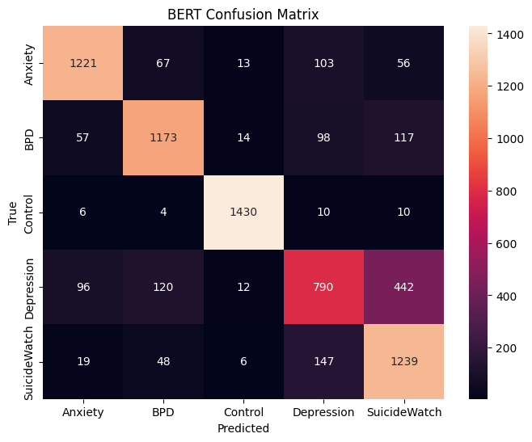
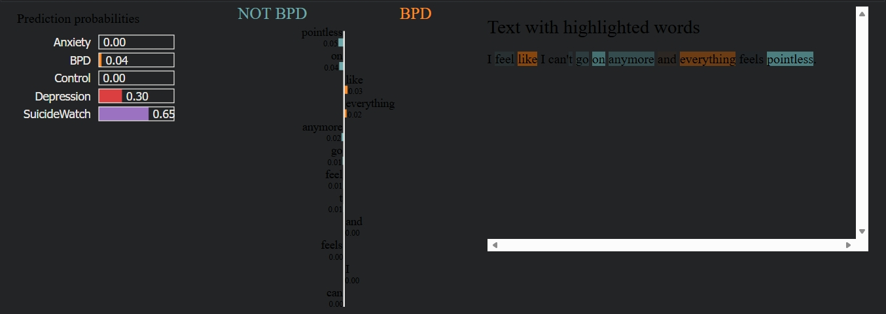
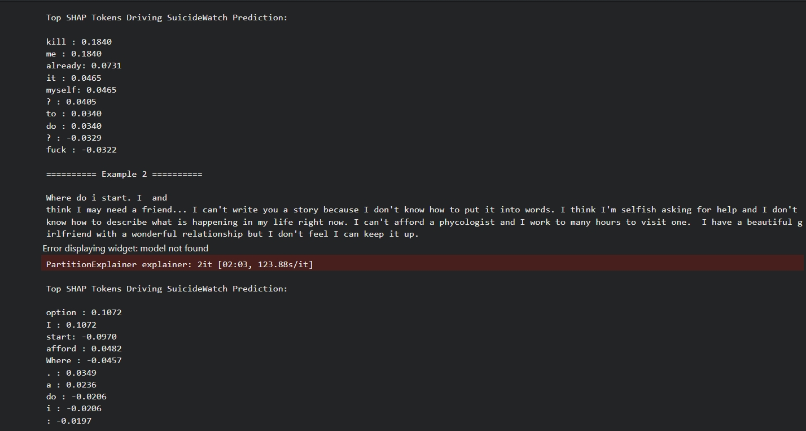
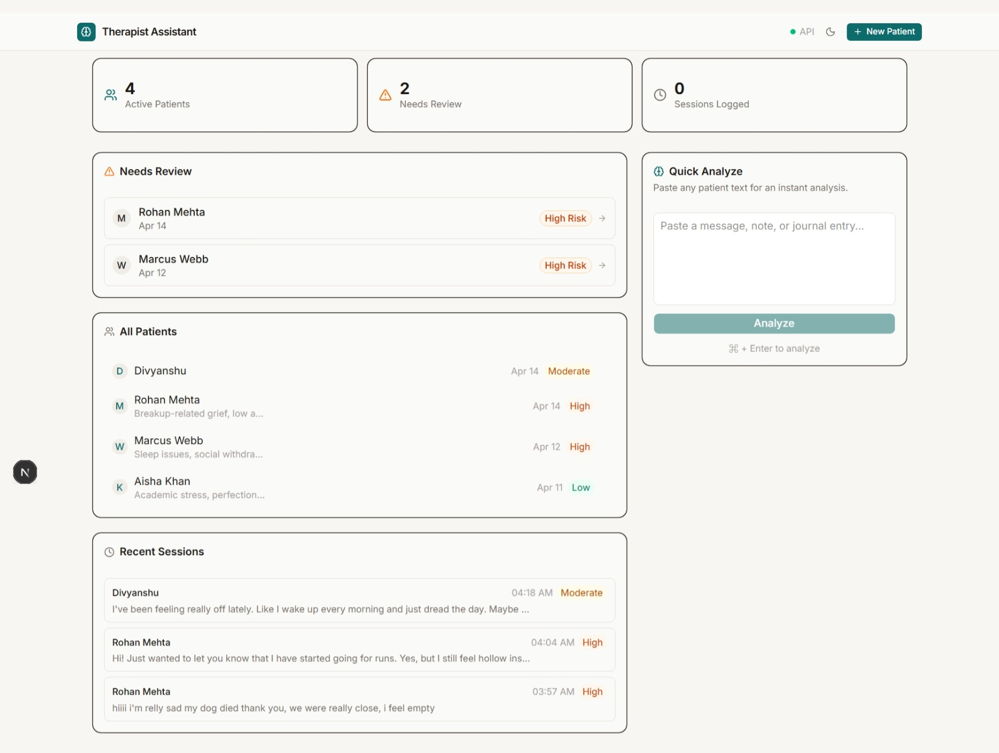
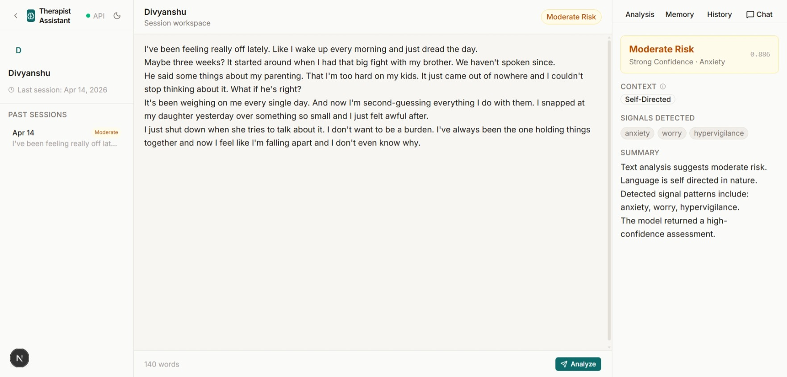
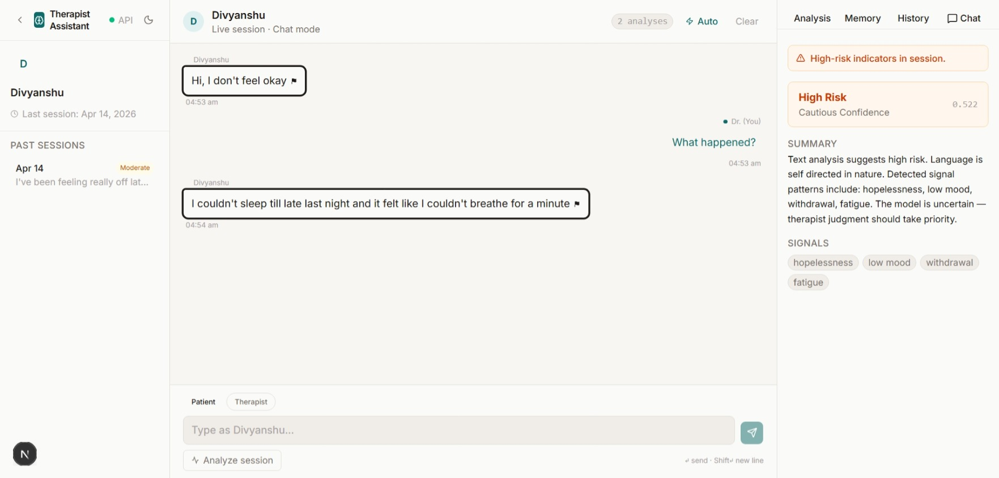

Manipal University Jaipur
Dept. of Computer Science & Engineering
PBL 2026
Therapist Assistant • XAI
Manipal University Jaipur
Dept. of Computer Science & Engineering
PBL 2026
Therapist Assistant • XAI
A clinical decision-support prototype that analyzes patient-written text, predicts mental health risk tiers, highlights evidence phrases, and manages verified patient memory via a multi-class BERT classifier.
Project Guide
Dr. Susheela Vishnoi
Student
Divyanshu Bhardwaj
Therapists now receive huge volumes of patient text (intake forms, portal messages, chats). Manually scanning this for risk indicators is slow and highly subjective. Overlapping language between chronic depression and acute suicidal ideation increases misclassification risks when models are treated as black boxes.
Earlier studies mainly use lexical features and classical models (TF–IDF + SVM) for binary detection. Newer research fine-tunes transformers for single communities, but typically treats models as raw accuracy numbers with no clinician-facing UI.
Limited work exists on multi-class classification across closely related groups combined with explainability. Our results show BERT confuses Depression and SuicideWatch—meaning real value lies in an explainable, human-in-the-loop interface.
Reddit posts (2018–2019) from 5 communities (Depression, Anxiety, BPD, SuicideWatch, Control). Balanced to yield 36K+ posts. Cleaned and tokenized to max 256 tokens.
Fine-tuned bert-base-uncased achieving ~80% macro F1. Evaluated against TF-IDF with Logistic Regression and Linear SVM baselines.
LIME and SHAP explainers highlight token-level contributions. Lexicon-based patterns (crisis language, self-harm) surface human-interpretable evidence for the therapist.
A FastAPI service handles text preprocessing, BERT inference, risk-tier mapping, and memory candidate extraction statelessly.
Persistence uses Prisma + Neon (PostgreSQL). Authentication via Clerk scopes data securely per therapist.
Built with Next.js, TypeScript, Tailwind CSS, and shadcn/ui. Therapists navigate a dashboard of patients, a structured session workspace, and a live chat mode with continuous AI dialogue analysis.
Macro F1 is our primary metric due to class imbalance. While BERT outperforms traditional baselines significantly, confusion between closely related states (Depression vs. SuicideWatch) persists.
Macro F1 (5-class)
Depression, Anxiety, BPD, SuicideWatch, Control
The confusion matrix shows major overlap between Depression and SuicideWatch.
Many Depression posts that mention crisis language are pulled towards SuicideWatch, and vice versa. This lack of clear boundary justifies the need for transparent AI explanations rather than just serving therapists raw labels.
BERT Confusion Matrix

Matrix Image PlaceholderSHAP and LIME explainers reveal that crisis-framing and hopelessness strongly influence these predictions. We surface these exact token highlights in the UI to prevent blind trust in the model.
LIME Output

LIME Image PlaceholderSHAP Output

SHAP Image PlaceholderThe dashboard acts as mission control. It displays active patients, alerts for sessions requiring review, and features a quick-analyze panel for immediate text triage.

Dashboard Image PlaceholderA unified layout combining patient history, live text notes, and AI analysis. Therapists instantly see the predicted risk tier, contextual labels, and highlighted evidence.

Workspace Image Placeholder
Chat Image PlaceholderIn chat mode, the assistant continuously analyzes incoming messages, updating risk signals in real time.
The AI proposes context points (e.g., "Sibling conflict", "Job loss"). Therapists must explicitly accept, edit, or reject these candidates before they enter the patient's long-term memory graph, ensuring clinical authority.
Therapist Assistant – Explainable AI-Assisted Mental Health Risk Triage System
Project Guide
Dr. Susheela Vishnoi
Student
Divyanshu Bhardwaj
23FE10CSE00063
Manipal University Jaipur • Dept. of CSE • 2026